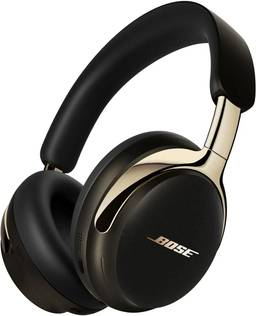
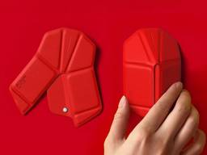
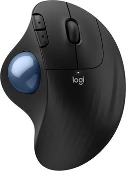
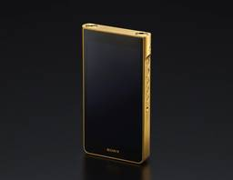
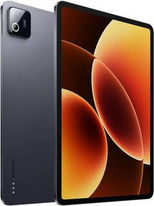
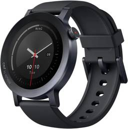

デイリーガジェット
https://daily-gadget.net/
デイリーガジェットは、スマホや海外発のユニークなガジェット、クラウドファンディングの注目アイテムまで幅広くレビュー。生活をもっと楽しく快適にする視点で、日常に驚きと便利さを届けるガジェット情報メディアです。
フィード

【Amazonプライム感謝祭(先行セール)】「Bose QC Ultra LE」がセールで約4.5万円！限定色と極上の立体音響を楽しめる
デイリーガジェット
Amazonで、10月16日(金)から「プライム感謝祭」が開催されています！ BOSE「QC Ultra LE」が、こちらのページで、約45,000円で購入が可能です。 生演奏のような立体音響 音楽や映像の世界にどっぷり...投稿 【Amazonプライム感謝祭(先行セール)】「Bose QC Ultra LE」がセールで約4.5万円！限定色と極上の立体音響を楽しめる は デイリーガジェット に最初に表示されました。関連記事:【Amazonプライム感謝祭】ALLDOCUBE「iPlay 80 mini Ultra」がセールで約5.6万円！Dimensity 8300搭載の5G対応8.8型タブレット【Amazonプライム感謝祭】TERRAMASTERのSSDケース ・NASが20％OFF！80Gbps対応モデルもセール対象、読者限定 の追加5％OFFコードも！Boseの有線イヤホンが復活！「Noise Cancelling Wired Earbuds」はアクティブノイズキャンセリング搭載で充電いらず
4時間前
【Amazonプライム感謝祭】ALLDOCUBE「iPlay 80 mini Ultra」がセールで約5.6万円！Dimensity 8300搭載の5G対応8.8型タブレット
デイリーガジェット
Amazonで、10月16日(金)から「プライム感謝祭」が開催されています！ ALLDOCUBE「iPlay 80 mini Ultra」が、こちらのページで、約56,000円で購入が可能です。 ※こちらは記事公開時点の...投稿 【Amazonプライム感謝祭】ALLDOCUBE「iPlay 80 mini Ultra」がセールで約5.6万円！Dimensity 8300搭載の5G対応8.8型タブレット は デイリーガジェット に最初に表示されました。関連記事:【Amazonプライム感謝祭】「ALLDOCUBE iPlay 80 mini Turbo」がセールで3.2万円！大画面8.8インチでゲームもサクサクALLDOCUBE iPlay 80 mini Ultraを実機レビュー！Dimensity 8300搭載＆5G対応、持ち運びに便利な8.8型タブレットALLDOCUBEの人気タブレットがAmaon初売りセールでかなりお得に！iPlay 60 miniが8,000円台、iPlay 70Eが1.6万円など
14時間前

「OrigamiSwift」が85ドルで登場！厚さ約4.5mmに折り畳める極薄マウス
デイリーガジェット
日々の在宅ワークにおいて、ダイニングテーブルがいつの間にかデスク化してしまうという悩みを抱える方は少なくありません。機材の出しっぱなしによる日常の小さなストレスを解消する製品が、Horace Lam氏によりデザインされた...投稿 「OrigamiSwift」が85ドルで登場！厚さ約4.5mmに折り畳める極薄マウス は デイリーガジェット に最初に表示されました。関連記事:HONOR「Magic 9」は中国で9月28日発表か！映画用カメラ「ALEXA」で知られる名門ARRIと組んだ新カメラ搭載とのことXbox限定コントローラー『Gears of War: E-Day』が登場！ひび割れた大地を立体再現し、9月30日より日本発売開始OnePlus「Ace 6 Ultra」に専用コントローラー、Androidスマホを携帯ゲーム機化する『夢のギア』が予告公開
16時間前
「Retroid Pocket Duo」が10月21日出荷！120Hz有機ELを2枚搭載する携帯ゲーム機
デイリーガジェット
Retroidが手がけるデュアルスクリーンAndroidゲーム機「Retroid Pocket Duo」の出荷日が、2026年10月21日に決定しました。当初の予定から1週間の遅れとなったものの、海外公式サイトでは10月...投稿 「Retroid Pocket Duo」が10月21日出荷！120Hz有機ELを2枚搭載する携帯ゲーム機 は デイリーガジェット に最初に表示されました。関連記事:Retroid「Pocket Duo Lite」に強化版「Plus」が海外登場！搭載チップを一新しメモリ8GBと高速ストレージRetroid「Pocket Duo」が予約開始！120Hz有機EL2枚搭載の2画面Android機が10月中旬出荷へ廉価版「Retroid Pocket Duo Lite」が誕生！大容量6000mAh電池と省電力設計
17時間前

【Amazonプライム感謝祭】Logicool トラックボール マウスがセールで約５千円！クリック音80%減・単三1本で18か月駆動のAmazon限定モデル
デイリーガジェット
Amazonで、10月16日(金)から「プライム感謝祭」が開催されています！ ロジクールの静音トラックボールマウス「M575SPd」が、 こちらのページで、約5,000円で購入が可能です。 Amazon売れ筋ランキングで...投稿 【Amazonプライム感謝祭】Logicool トラックボール マウスがセールで約５千円！クリック音80%減・単三1本で18か月駆動のAmazon限定モデル は デイリーガジェット に最初に表示されました。関連記事:【Amazonプライム感謝祭】TERRAMASTERのSSDケース ・NASが20％OFF！80Gbps対応モデルもセール対象、読者限定 の追加5％OFFコードも！【Amazonプライム感謝祭(先行セール)】「Logicool M575SPd」がセールで4,900円台！待望の静音化を果たした定番トラックボール仕事もゲーミングもスピードアップの上質キーボード爆誕レビュー！【FILCO Majestouch Stingray 低背赤軸 vs 銀軸】
19時間前
「ROG Bulwark Dock DG310」が国内発売！4K/144Hz出力と有線LAN搭載のポータブル機向けドック
デイリーガジェット
ポータブルゲーミングPC向けの新たなドッキングステーション「ROG Bulwark Dock DG310」が、日本国内で19,980円にて発売されました。上位モデルである「DG300」から一部のデータ転送スペックを抑えつ...投稿 「ROG Bulwark Dock DG310」が国内発売！4K/144Hz出力と有線LAN搭載のポータブル機向けドック は デイリーガジェット に最初に表示されました。関連記事:「ROG Xbox Allyシリーズ」がついに情報解禁＆予約受付開始！最新ポータブルゲーミング端末の新型2モデルは何が違う？カスタムRyzen Z2搭載の新型ポータブル「Xbox ROG Ally / X」が8月20日予約開始か、価格は最大約14万円にASUSでバッテリー持続時間と冷却性能を向上させるアップグレードキットが注文可能に！【Asus ROG Ally】
1日前

SONY「NW-WM1ZM3」発表！純金メッキ銅筐体を採用した約88万円の新型ウォークマン
デイリーガジェット
ソニーが、Android 16を搭載したWalkman WM1シリーズの最新フラッグシップモデル「NW-WM1AM3」および「NW-WM1ZM3」を発表しました。最上位モデルは約88万円（5,899ドル）という価格に見合...投稿 SONY「NW-WM1ZM3」発表！純金メッキ銅筐体を採用した約88万円の新型ウォークマン は デイリーガジェット に最初に表示されました。関連記事:ソニー新型ウォークマン「NW-WM1ZM3」「NW-WM1AM3」の詳細が判明！5.5インチのフルHD画面とOFC筐体とのリークソニーが新型ヘッドホン「The ColleXion」を発売するとのリーク！XM6の4割増しで8万円〜、その音は何が違うのかGPD WIN3クラウドファンディングでダントツ人気はドック付き最上位構成の黒！
1日前
「Spark 50s 5G」が海外発売！6500mAhバッテリーとPixel 11風デザインを備えたスマホ
デイリーガジェット
Transsion傘下のTecnoから、最新の5Gスマートフォン「Spark 50s 5G」がインド市場向けに発表されました。Googleの「Pixel 11」を彷彿とさせる特徴的なカメラデザインを採用しつつ、ベースモデ...投稿 「Spark 50s 5G」が海外発売！6500mAhバッテリーとPixel 11風デザインを備えたスマホ は デイリーガジェット に最初に表示されました。関連記事:「Google Pixel 12」解像度が判明！縦ピクセル削減とFoldの24%高精細化Lenovoが「Yoga 9n 2-in-1」を発表！NVIDIA製チップ「RTX Spark」と99.9Wh大容量バッテリー搭載の16型有機ELノートNvidia N1X搭載「Lenovo Yoga Pro 9n」リーク！20コアと最大128GBメモリでM5 Maxの対抗馬となるか
1日前

【Amazonプライム感謝祭】「Xiaomi Pad 8」がセールで約6万円台！11.2型3.2K・144Hz液晶にSnapdragon 8s Gen 4搭載の高画質タブレット
デイリーガジェット
Amazonで、10月16日(金)から「プライム感謝祭」が開催されています！ Xiaomiの11.2型タブレット「Xiaomi Pad 8」8GB+128GBモデルが、 こちらのページで、約61,000円で購入が可能です...投稿 【Amazonプライム感謝祭】「Xiaomi Pad 8」がセールで約6万円台！11.2型3.2K・144Hz液晶にSnapdragon 8s Gen 4搭載の高画質タブレット は デイリーガジェット に最初に表示されました。関連記事:「Redmi Pad 2」を実機レビュー！Helio G100-Ultra搭載でコスパ抜群の11インチタブレット！「ALLDOCUBE Ultra Pad」を実機レビュー！Snapdragon 7+ Gen 3搭載で144Hz対応の大型13インチタブレット！「Xiaomi Pad 7」を実機レビュー！Snapdragon 7+ Gen 3搭載で高精細ディスプレイを持つ高コスパなタブレット！
1日前

【Amazonプライム感謝祭】「CMF by Nothing Watch 3 Pro」がセールで9千円台！スマホ不要の高精度GPS搭載
デイリーガジェット
Amazonで、10月16日(金)から「プライム感謝祭」が開催されています！ 「CMF by Nothing Watch 3 Pro」が、 こちらのページで、約9,900円で購入が可能です。 カバンからスマホを出すのが面...投稿 【Amazonプライム感謝祭】「CMF by Nothing Watch 3 Pro」がセールで9千円台！スマホ不要の高精度GPS搭載 は デイリーガジェット に最初に表示されました。関連記事:CMF by Nothing「Watch Pro 2」がAmazonセールで7,480円！1.32インチ有機EL・466×466で常時表示対応のスマートウォッチ「CMF Phone 2 Pro」グローバル版を実機レビュー！薄型・軽量で堅実スペックな個性派スマホ、しかも技適あり！Nothing Phone (3a) グローバル版を実機レビュー！スペックだけ見れば普通だけど、使うと楽しい個性派ミドルレンジスマホ
2日前